Getting started: pages
Getting started
Progression
The tech path read off the recipes, from vanilla materials to a full rack of servers, and what each new material unlocks.
On this page
Encoded Logistics has no research tree or unlock gates: what you can build depends only on what you can craft. The recipes fall into tiers, set by the four dies the  Lithography Press makes and the three metals you mine for them. This page walks through those tiers in order and points to where each thing is documented.
Lithography Press makes and the three metals you mine for them. This page walks through those tiers in order and points to where each thing is documented.
| Tier | You need | The die it gives | What it opens up |
|---|---|---|---|
| 1. Vanilla | Iron, copper, redstone, sand, glass, string, slime, coal | (none yet) | Circuit Substrate, silicon, the Lithography Press |
| 2. Logic | The press and FE | Your first network, the Midrange line, the Server Rack, signals and displays | |
| 3. Memory | Neodymium and tantalum | Bigger drives, ports, the Capacitor Bank, schematics, Gateways | |
| 4. Processor | Gallium | Fabricators, Schedulers, servers, fibre and wireless | |
| 5. Autocrafting | All of the above | Schematics, jobs, Schedulers | |
| 6. The full rack | All of the above | Firewalls, Routers, NAS and SAN, Tape Libraries, chassis |
1. Vanilla materials#
Everything starts from the Overworld's basics. 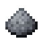 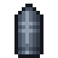 Ferrite (iron and redstone),
Ferrite (iron and redstone),  Copper Foil,
Copper Foil,  Fiberglass and Solder Paste make the
Fiberglass and Solder Paste make the  Circuit Substrate that nearly every device needs, and sand goes through Silica,
Circuit Substrate that nearly every device needs, and sand goes through Silica,
2. The press and the Logic Die#
The  Lithography Press needs only iron, glass, Ferrite, redstone and a substrate, plus FE from another mod. Its first two photomasks, the
Lithography Press needs only iron, glass, Ferrite, redstone and a substrate, plus FE from another mod. Its first two photomasks, the  Logic Photomask and the
Logic Photomask and the  Storage Photomask, need nothing more, so the
Storage Photomask, need nothing more, so the  Logic Die and the
Logic Die and the  8K Storage Die are the first dies you make. See Lithography.
8K Storage Die are the first dies you make. See Lithography.
Logic Dies alone are enough for a lot:
- A first network. The
 Network Controller (it also takes a diamond),
Network Controller (it also takes a diamond),  Power Inlet,
Power Inlet,  Network Cable,
Network Cable,  Drive Bay,
Drive Bay,  Access Terminal, and 8K and 32K Storage Drives for items and fluids. Your first network builds one.
Access Terminal, and 8K and 32K Storage Drives for items and fluids. Your first network builds one. - Early autocrafting with the Midrange line. The
 Midrange System,
Midrange System,  Expansion Cabinet, Card Punch, Card Reader, Line Printer,
Expansion Cabinet, Card Punch, Card Reader, Line Printer,  Disk Drive and
Disk Drive and  Tape Drive need only Logic Dies, Ferrite and vanilla materials. You punch crafting recipes onto
Tape Drive need only Logic Dies, Ferrite and vanilla materials. You punch crafting recipes onto 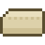
Punch Cards, read them onto an 8" Diskette, and the Midrange System crafts them itself, long before you have a Processor Die. A Midrange System is also its own network's controller, so it can stand in for a Network Controller. See The Midrange line.
8" Diskette, and the Midrange System crafts them itself, long before you have a Processor Die. A Midrange System is also its own network's controller, so it can stand in for a Network Controller. See The Midrange line. - The Server Rack and the Terminal Desk. The
 Server Rack itself is iron and Ferrite, and the Terminal Desk (which runs the Terminal OS) is built round an Access Terminal. A few rack devices are Logic Die tier too: the
Server Rack itself is iron and Ferrite, and the Terminal Desk (which runs the Terminal OS) is built round an Access Terminal. A few rack devices are Logic Die tier too: the  2U Network Controller and the
2U Network Controller and the 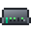
24-Port L2 Switch. - Signals and displays. The
 Control Interface,
Control Interface,  Programmable Logic Controller and
Programmable Logic Controller and 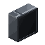
Display Panel. See Control and facility. - Cable tools and simple parts.
 Dense Network Cable, the
Dense Network Cable, the  Segment Isolator, the
Segment Isolator, the  Cable Anchor and
Cable Anchor and  Cable Facade, the
Cable Facade, the  Threshold Sensor, the
Threshold Sensor, the  Collector Plane and
Collector Plane and  Deployer Plane, and the Filter and Redstone Control Modules. See Networks.
Deployer Plane, and the Filter and Redstone Control Modules. See Networks.
3. Neodymium and tantalum: the Memory Die#
Next you mine. 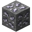 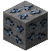 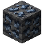
 Tantalum Capacitor: a tantalum ingot, Copper Foil and Solder Paste make two.
Tantalum Capacitor: a tantalum ingot, Copper Foil and Solder Paste make two.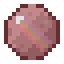
Doped Silicon: a Silicon Wafer and redstone. It's the wafer for the two higher dies.- The
 Memory Photomask (Doped Silicon in the centre) lets the press etch the
Memory Photomask (Doped Silicon in the centre) lets the press etch the  Memory Die.
Memory Die.
What it opens up:
| Area | New things | Guide |
|---|---|---|
| Storage | 128K and 512K dies (neodymium), item drives from 128K up (tantalum), Pressurized and Energy Storage Drives, the LTO Tape Drive and LTO tape upgrades | Storage Dies and Drives, LTO tapes and Tape Libraries |
| Power | The | Power |
| Parts | The | Cable parts |
| Crafting | The 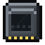 Schematic Card,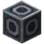 Gateway and | Crafting and automation |
| Racks | The 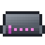 Memory Server and | Rack devices |
| Midrange | The | The Midrange line |
4. Gallium: the Processor Die#
Gallium is the deepest and rarest: 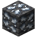 Processor Photomask, and another as the press's additive with Doped Silicon, make the
Processor Photomask, and another as the press's additive with Doped Silicon, make the  Processor Die. Many of the same recipes also want a
Processor Die. Many of the same recipes also want a  Heatsink (copper and Ferrite).
Heatsink (copper and Ferrite).
Gallium also goes straight into  Fiber Cable, the
Fiber Cable, the  Optical Transceiver and the
Optical Transceiver and the  Radio Module, so it opens up long-distance and wireless networking as well as the top tier of devices:
Radio Module, so it opens up long-distance and wireless networking as well as the top tier of devices:
| Area | New things | Guide |
|---|---|---|
| Autocrafting | The 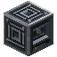 Fabricator, | Crafting and automation |
| Storage | The 2M die and drives, LTO-10, the | Storage |
| Racks | The | Rack devices |
| Networking | Networking | |
| Terminals | The | Handheld Terminal |
5. Autocrafting#
With Processor Dies you can build the full autocrafting chain:
- A
 Schematic Encoder writes recipes onto Schematic Cards: crafting recipes, and processing recipes for machines, with fluids and gases. See Schematics.
Schematic Encoder writes recipes onto Schematic Cards: crafting recipes, and processing recipes for machines, with fluids and gases. See Schematics. - Fabricators craft the crafting schematics, and Gateways next to machines run the processing ones. See Fabricators and Gateways.
- A Scheduler (a Scheduler Core with Job Buffers and Thread Units) plans and runs jobs, or Compute and Memory Servers do it in a rack. See Schedulers.
- You ask for an item from any terminal and follow the job on Job Status. See Crafting jobs.
If you've been crafting on a Midrange System, its diskettes' recipes keep working alongside: they're network recipes like any other.
6. A full rack setup#
The last step is to move the network's core into  Server Racks: a redundant pair of rack Network Controllers, a Firewall guarding who may do what, UPSes riding out power cuts, switches pooling lanes, servers running the jobs, NAS and SAN storage, and Tape Libraries archiving what you rarely use. Routers, Exchange Switches and optical lines then join separate networks together. Start at Server racks and Networking, and use the Terminal OS to watch and script all of it.
Server Racks: a redundant pair of rack Network Controllers, a Firewall guarding who may do what, UPSes riding out power cuts, switches pooling lanes, servers running the jobs, NAS and SAN storage, and Tape Libraries archiving what you rarely use. Routers, Exchange Switches and optical lines then join separate networks together. Start at Server racks and Networking, and use the Terminal OS to watch and script all of it.